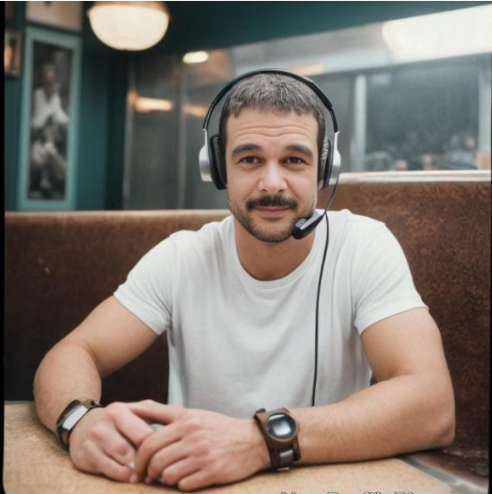

السنوات الدراسية
اختر صفك الدراسي وابدأ رحلتك التعليمية
منصة شاملة لتعلم اللغة العربية بطريقة فعالة وتمكين الطالب من التفوق. دروس مرئية، تمارين تفاعلية، وملخصات احترافية.

نظام متابعة ذكي يتيح لك معرفة مستواك وتقدمك في كل وحدة دراسية
إمكانية مشاهدة الدروس غير محدودة في أي وقت ومن أي مكان
تعلّم من منزلك بالراحة التامة دون الحاجة للانتقال
اختر صفك الدراسي وابدأ رحلتك التعليمية
الأستاذ جمال السيد. تخرج من كلية الآداب / اللغة العربية بجامعة سوهاج. وهو أول من لقّب بخادم الفصحى، حيث كرّس نصف حياته ليتعلمها والنصف الآخر ليُعلمها.
صورة الأستاذ هنا